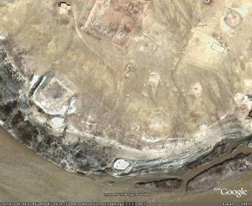
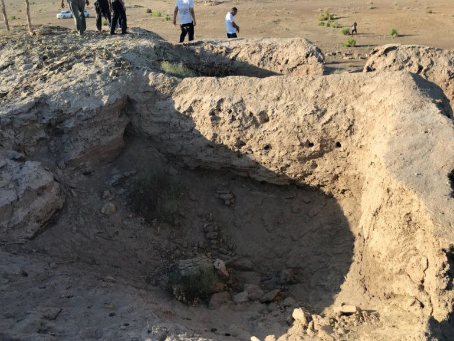

"TOSH QAL’A -2"
1. Me’moriy inshootning nomi:
"TOSH QAL’A -2"
2. Me’moriy inshoot tiklangan yil:
mil.av. II – mil. VIII asrlarga oid
3. Me’moriy inshoot joylashgan manzil:
Bog‘ot tumani Xo‘jalik qishlog‘ida joylashgan.
4. Me’moriy inshootning qurilish materiallari:
Xom g‘isht, paxsa - guvala, qum, yog‘och
5. Inshootning bosh fasadi h.k.lar:


6. Me’moriy inshootning o‘lchamlari
umumiy maydoni 70x70m,
7. Me’moriy inshoot to‘g‘risida tarixiy ma’lumot:
Toshqal’a-2 Tuproqqal’a massivi Amudaryo sohilida joylashgan. Rejalashtirilishi to‘rt tomoni teng, umumiy maydoni 70x70m. Yodgorlik qadimda ikki qatorli devor bilan o‘rab olingan bo‘lib, devordan yon tomonga o‘sib chikkan burj izlari yaqqol ko‘zga tashlanadi. Yodgorlik yer sathidan 4 m balandlikda saqlanib qolgan.
Natijada ikki qatorli devor o‘rganilib, ular o‘rtasida kengligi 2,2 m bo‘lgan yo‘lak mavjudligi aniqlandi. Tashqi devor qalinligi – 2 m, ichki devor qalinligi ham 2 m ga teng. Devor burchagida va devorda yarim aylana burj mavjud bo‘lib, devordan old tomonining o‘sib chiqishi – 5,5m, devor va burjlar nayza o‘qi uchli shinaklar bilan kuchaytirilgan bo‘lib, ularning eni 18-20sm, balandligi 40sm. Yodgorlikda turli davrlarga oid bir nechta ta’mirlash izlari aniqlangan. Shuningdek, yodgorlikning janubiy-sharqiy tomonida olib borilgan qazishmalar natijasida qal’aga kirish joyi va g‘arbiy burchagida me’moriy inshoot qoldiqlari topildi.
8. Me’moriy inshootning texnik holati:
Yer ustki qism 100% devor konstruksiyalari ekologik va texnogen ta’sirlar natijasida yo‘qolib ketgan
BOSH SAHIFAGA QAYTISH